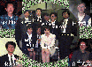

メンバー
メンバー

(大きな写真を見たい方は、
左の写真をクリックしてみて下さい。)
題: Quixote グループまんだ羅図!? :-) 四天王版
作成: 田辺新一
1995年3月30日 Quixote Last Party,
31日 ICOT 解散パーティーにて
- Quixote を研究、開発したメンバーを紹介しましょう。
- 横田さん、
安川さん、
津田さん、
合田さん、
小島さん、
西岡さん、
g新部さん、
森田さん、
田中(勉)さん、
平井さん、
菊池さん、
天沼さん、
鈴木さん、
鎌田さん、
高瀬さん、
川上さん、
高田さん、
堀川さん、
須田さん、
永田さん、
高橋さん
- Quixote 上の応用を研究、開発したメンバーも紹介しましょう。
- 東条さん、
山本さん、
柴崎さん、
田中(秀)さん、
広沢さん、
田中(令)さん
Quixote のホームページ